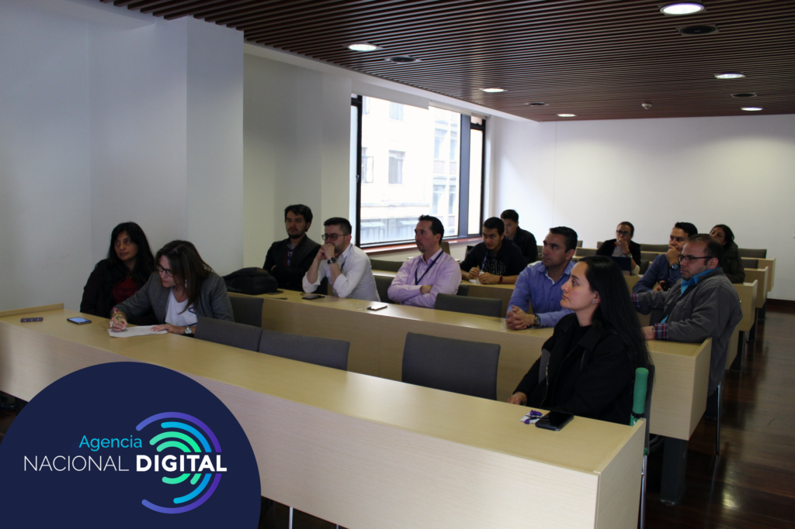

NUESTRA DIRECCIÓN HA CAMBIADO
Ahora en la AND tenemos una nueva perspectiva estratégica; un cambio de dirección que plantea algunos ...
JORNADA DE PLANEACIÓN ESTRATÉGICA 2020-2022
El día 6 de noviembre la Agencia Nacional Digital realizó su jornado de planeación estratégica bajo el liderato de las...
ELECCIÓN DE REPRESENTANTE PARA LOS COMITÉS INTERNOS
La Agencia Nacional Digital llevó a cabo las votaciones internas para seleccionar al representante del comité de convivencia laboral y...
LA AND PARTICIPÓ EN EL SIMULACRO DISTRITAL DE EVACUACIÓN
En cualquier momento, sin importar el lugar o la hora es posible que sin previo aviso suceda algún tipo de...

PROGRAMA DE BILINGÜISMO DEL DAFP – SENA
La Agencia Nacional Digital se suma a la iniciativa de tiene el Departamento Administrativo de la Función Pública (DAFP) y...
NUESTRA DIRECCIÓN HA CAMBIADO
March, 2020Ahora en la AND tenemos una nueva perspectiva estratégica; un cambio de dirección que plantea algunos desafíos y que nuestra nueva directora Lesly Cristina Gómez Jaramillo está lista para afrontar. La ingeniera industrial tiene las habilidades y la experiencia requerida para ser una excelente líder de equipo.
El cambio de dirección en la AND afronta grandes retos para continuar
adaptándose a la era digital y apoyar la implementación de la transformación digital
en todo el país. Sabemos que Colombia tiene todo el potencial para seguir desarrollando
proyectos de ciencia, tecnología e innovación aplicada, por esto la AND apuesta por la
innovación y en ser una asesora para el Gobierno y ayudarle a articular y a prestar los
servicios ciudadanos digitales. para así construir un ecosistema de información pública
capaz de impactar de manera positivas a millones de personas y así mejorar su calidad de vida.

JORNADA DE PLANEACIÓN ESTRATÉGICA 2020-2022
December 13, 2019
El día 6 de noviembre la Agencia Nacional Digital
realizó su jornado de planeación estratégica bajo el
liderato de las profesionales de planeación Jenny
Cruz y Johanna Laverde, encargadas de dirigir los
diferentes ejercicios que se llevaron a cabo a lo
largo de toda la jornada. Para el desarrollo de las
actividades estuvieron presentes los líderes de cada
área de trabajo. Mayerly Díaz Rojas Directora, Luis
Alberto Clavijo Cuineme Asesor de Dirección, Claudia
Bibiana Durán Huergo Subdirectora de Administrativa
y Financiera, Julie Ximena Rueda Montes Subdirectora
de Jurídica, Lina María Cruz Silva Subdirectora de
Servicios Ciudadanos Digitales, Diana Milena Barbosa
Rojas Subdirectora de Desarrollo, además cada
representante estuvo acompañado de sus líderes de
equipo de trabajo.
El taller de planeación estratégica dió inicio
en las horas de la mañana, con dinámicas que
permitieron en primera instancia dar una
revisión a la plataforma estratégica (misión,
visión, objetivos) para lograr un acercamiento a
la organización conceptual que busca la Agencia
Nacional Digital. Posteriormente se llevó a cabo
una revisión de la articulación con el Plan
Nacional de Desarrollo y el Plan Estratégico
Sectorial TIC, en el que la Agencia cumple un
rol de gran importancia al ser el encargado de
apoyar la transformación digital del país.
Igualmente se realizó un reconocimiento del modelo
de negocio que actualmente está manejando la Agencia
Nacional Digital, para ello se hizo uso del modelo
canvas y de ahí se consiguió una visualización más
focalizada de los puntos clave a tratar. De modo tal
que los líderes esclarecieron cuales son las
estrategias que tiene que llevar a cabo la entidad
para lograr una correcta gestión y alcanzar los
objetivos propuestos.
La Agencia Nacional Digital continuará
trabajando por lograr la implementación del
Modelo de Servicios Ciudadanos Digitales,
aportando a la mejora en el funcionamiento de
los trámites digitales de las entidades
públicas, contribuyendo a la transformación
digital del Estado. Seguirá emprendiendo
proyectos de ciencia, tecnología e innovación
aplicada para dar solución a las diferentes
necesidades de transformación digital que tengan
las entidades públicas en Colombia..
La Agencia Nacional Digital continuará
trabajando por lograr la implementación del
Modelo de Servicios Ciudadanos Digitales,
aportando a la mejora en el funcionamiento de
los trámites digitales de las entidades
públicas, contribuyendo a la transformación
digital del Estado. Seguirá emprendiendo
proyectos de ciencia, tecnología e innovación
aplicada para dar solución a las diferentes
necesidades de transformación digital que tengan
las entidades públicas en Colombia.
ELECCIÓN DE REPRESENTANTE PARA LOS COMITÉS INTERNOS
December 13, 2019
La Agencia Nacional Digital llevó a cabo las
votaciones internas para seleccionar al
representante del comité de convivencia laboral y el
COPASST, el día 15 de noviembre del 2019 en el
edificio Murillo Toro, los candidatos tuvieron la
posibilidad de ser elegidos por los trabajadores, a
través de una votación secreta, que se realizó con
expresión libre, espontánea y auténtica de todos los
trabajadores mediante escrutinio público. La persona
seleccionada para los comités, se encargará de
promover un excelente ambiente de convivencia
laboral y espacios saludables de trabajo, fomentar
relaciones sociales positivas entre todos los
trabajadores y respaldar la dignidad e integridad de
los trabajadores de la AND.
La Agencia Nacional Digital llevó a cabo las
votaciones internas para seleccionar al
representante del comité de convivencia laboral y el
COPASST, el día 15 de noviembre del 2019 en el
edificio Murillo Toro, los candidatos tuvieron la
posibilidad de ser elegidos por los trabajadores, a
través de una votación secreta, que se realizó con
expresión libre, espontánea y auténtica de todos los
trabajadores mediante escrutinio público. La persona
seleccionada para los comités, se encargará de
promover un excelente ambiente de convivencia
laboral y espacios saludables de trabajo, fomentar
relaciones sociales positivas entre todos los
trabajadores y respaldar la dignidad e integridad de
los trabajadores de la AND.
Igualmente se realizó un reconocimiento del
modelo de negocio que actualmente está manejando
la Agencia Nacional Digital, para ello se hizo
uso del modelo canvas y de ahí se consiguió una
visualización más focalizada de los puntos clave
a tratar. De modo tal que los líderes
esclarecieron cuales son las estrategias que
tiene que llevar a cabo la entidad para lograr
una correcta gestión y alcanzar los objetivos
propuestos.
LA AND PARTICIPÓ EN EL SIMULACRO DISTRITAL DE EVACUACIÓN
December 13, 2019
En cualquier momento, sin importar el lugar o la hora es posible que sin previo aviso suceda algún tipo de
emergencia o siniestro en Colombia. Ante dicha posibilidad el instituto nacional de gestión de riesgos y
cambio climático promueve parámetros que permiten dar posibles soluciones para actuar ante eventos
inesperados y salvaguardar vidas.
Asumiendo la responsabilidad como ente público la AND se preparó con antelación al informarse sobre todos los requisitos y pautas que se han de tener en cuenta ante cualquier situación que pueda vulnerar la vida de las personas. Por ello en la entidad se conformó una brigada la cual tuvo como labor informarse y capacitarse como un primer respondiente. Asimismo se prepararon y se establecieron acuerdos para evacuar en caso de emergencia, se identificaron formas de protección y finalmente cuando ya se coordinaron las rutas de evacuación y puntos de encuentro seguros ante una emergencia, la AND se inscribió al octavo simulacro distrital de evacuación.
PROGRAMA DE BILINGÜISMO DEL DAFP – SENA
December 13, 2019
La Agencia Nacional Digital se suma a la iniciativa de tiene el Departamento Administrativo de
la Función Pública (DAFP) y el Servicio Nacional de Aprendizaje (SENA), quienes firmaron un convenio
interadministrativo para crear un programa que tiene como objetivo capacitar en inglés o francés a
servidores públicos y contratistas, para así ampliar sus capacidades y competencias laborales,
posibilitando el desarrollo profesional y personal, facilitando la gestión de relaciones y oportunidades internacionales.
Tenemos un compromiso con la sociedad y por ello buscamos fortalecer las habilidades de nuestro talento humano, motivarlos a crear transformaciones en sus propias vidas, y así generar una gran eficiencia y productividad, que ayude a nuestros procesos internos y a desarrollar nuevas oportunidades de interacción con nuestros grupos de valor. Por ello la AND tuvo un encuentro con el personal encargado de llevar el acompañamiento a las personas que se inscribieron al programa de bilingüismo, explicando el funcionamiento de la metodología de estudio y las diversas actividades que se deben desarrollar para lograr un excelente aprendizaje. Por lo cual la AND se comprometió con sus colaboradores a generar espacio y a brindar el tiempo que necesiten para el desarrollo de las actividades.
